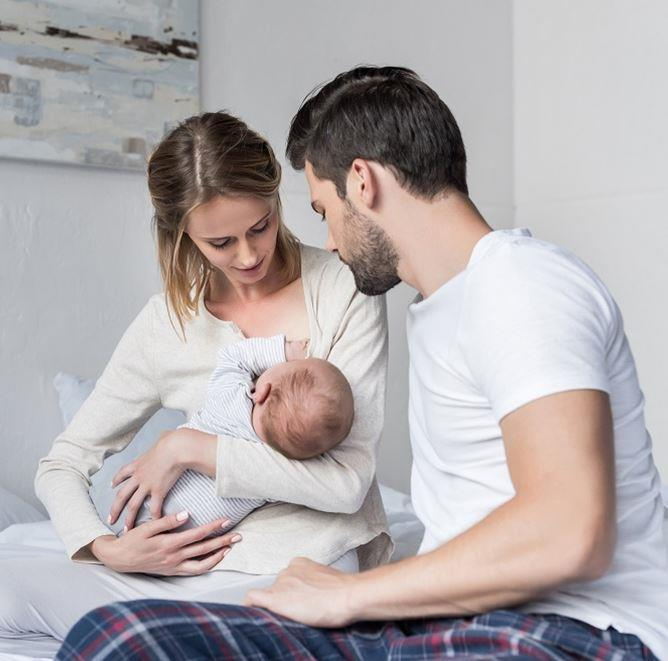
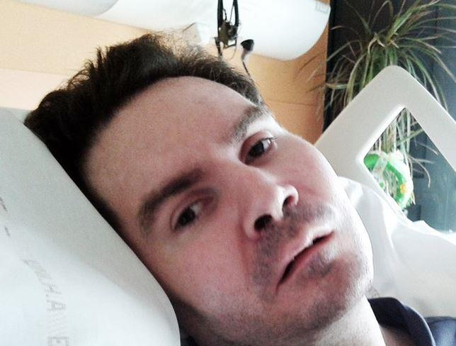

Universitaire (docteur et habilité à diriger des recherches en histoire du droit et des idées politiques), Guillaume Bernard est intervenu, à titre personnel, lors des rassemblements « Marchons enfants » du 10 octobre 2020. Il a prononcé, en des termes à peu près identiques, le discours suivant, d’abord à Rennes puis à Nantes.
Chers amis, merci d’être là. Vous êtes l’honneur de la France. Et merci aux organisateurs qui ont redoublé d’efforts pour que nous puissions nous rassembler. Vous savez que des yeux sont faits pour voir et des oreilles pour entendre. Et, parce que vous voyez et entendez la surenchère progressiste qui, en permanence, depuis des décennies, chosifie l’enfant qui va naître, vous avez décidé de ne pas vous taire.
Ensemble, nous sommes tous, là, pour dire et, s’il le faut, hurler à la face du monde, que l’on juge une civilisation au sort qu’elle réserve au plus faible et au plus innocent de tous les êtres humains.
L’enfant n’est pas un objet dont on dispose à son gré. L’enfant n’est pas un droit que l’on revendique parce que l’on en a envie. L’enfant ne peut faire l’objet d’un contrat ou d’une transaction. Non, personne, quelle que soit d’ailleurs la sexualité pratiquée, n’a de droit à l’enfant. Malgré les arguties du droit positif, l’enfant est une personne au sens étymologique du mot, c’est-à-dire qu’il joue un rôle, et ce rôle, que l’enfant soit né ou non, c’est celui d’un continuateur.
Dès lors, ses parents ont une fonction, un devoir envers lui : l’élever pour qu’il puisse, dans le même mouvement, assumer sa singularité et prendre leur succession dans l’histoire des hommes.
La chosification de l’enfant, déjà présente dans toute PMA puisque celle-ci suppose un tri eugénique des embryons avant implantation, serait étendue avec l’extension de la PMA aux femmes seules et aux couples homosexuels. Voilà pourquoi nous nous y opposons. Il n’y aucune discrimination illégitime à ne pas attribuer un droit quand il y a une situation profondément différente, en l’occurrence quand il n’y a aucune capacité naturelle de procréation, quand la stérilité est intrinsèque et non accidentelle.
Nous refusons de nous laisser intimider par la surenchère progressiste qui voudrait, régulièrement, nous faire courir derrière sa dernière lubie. Nous savons bien qu’en matière de bioéthique, tout est lié, tout s’enchaine, tout se tient même si le progressisme n’avance qu’à petits pas pour essayer d’accoutumer les esprits à ses revendications sans cesse renouvelées : PACS, mariage homo, PMA et demain GPA. Nous avons bien que les transgressions futures s’appuient sur les transgressions du passé. Nous ne sommes pas paralysés par l’effet cliquet qui voudrait que l’on ne puisse pas revenir sur des mesures antérieures. Nous savons bien que la matrice de la chosification de l’enfant, c’est… l’avortement.
Alors, d’aucuns diront peut-être qu’il ne faut pas en parler de peur de heurter certaines sensibilités, de peur de démobiliser quelques personnes, de peur de parler d’un combat d’arrière-garde. Quel manque de réalisme ! Ne voient-ils pas que, pour les progressistes, l’avortement est, le sujet, le cœur de la question bioéthique et qu’ils y reviennent sans cesse. Sans cesse pour aggraver la chosification de l’enfant. Alors qu’elle avait supprimé, en 2014, la condition de détresse pour avoir recours à une IVG (interruption volontaire de grossesse), l’Assemblée nationale n’a-t-elle pas, en août dernier, introduit la détresse psycho-sociale pour avoir recours à une supposée IMG (interruption médicale de grossesse), c’est-à-dire permettre, pour des raisons subjectives, un avortement jusqu’à la veille de l’accouchement ? Ce n’est pas tout. Il y a quelques jours à peine, les députés ont allongé à 14 semaines le délai pour avoir recours à une IVG et ont même osé supprimer la clause de conscience des médecins leur permettant de refuser de participer à un avortement.
Les choses sont claires. Les progressistes ne veulent pas disposer d’une faculté pour eux seuls ; ils veulent nous obliger à les approuver. La tolérance ne leur suffit aucunement : ils exigent la complicité de tous. Ils veulent nous compromettre dans leur culture de mort ! Et bien, nous leur disons clairement et fermement : non ! Nous continuerons à résister et nous continuerons sans cesse à répéter que l’enfant à naître n’est responsable d’aucun acte qui justifie, comme rétribution, son élimination.
Bien sûr, nous ne sommes pas dupes d’une possible stratégie du Gouvernement Macron qui pourrait laisser voter des cavaliers législatifs pour, ensuite, en obtenant qu’ils soient retirés, prétendre que son texte serait modéré et équilibré. Même si les dernières mesures en date n’étaient finalement pas retenues dans la dernière mouture de la loi, la révision des dispositions en matière de bioéthique resteraient inacceptables.
Car, quel est le sens profond de la surenchère progressiste ? L’homme se croit tout puissant et se veut créateur de lui-même. Dans ces conditions, ne serait véritablement homme, et donc digne d’être pris en considération et protégé, que celui qui exerce sa volonté pour se rebeller contre la nature qu’il a reçue, pour se retourner contre la nature qui lui a été donnée par l’ordre des choses.
C’est tout le fondement idéologique de la théorie du genre qui prétend mettre sur un pied d’égalité toutes les formes de mœurs.
D’où le mariage homosexuel hier ou l’extension de la PMA aujourd’hui.
Mais, c’est aussi la même démarche qui conduit à considérer que, parce qu’ils ne sont pas autonomes, l’enfant à naître ou le malade comateux ne doivent pas être considérés comme de véritables êtres humains. Souvenez-vous de Vincent Lambert qu’ils ont délibérément assassiné !
Pour le progressisme, il n’y a plus d’ontologie, il n’y a que des potentialités. C’est ainsi que tous les garde-fous encadrant la recherche ont été petit à petit supprimés et que le projet de loi de Macron va permettre à des apprentis sourciers de créer des embryons transgéniques et chimériques. Les politiciens prétendent lutter contre le (puis la) Covid-19, mais ils cultivent la mort : la mort démographique par l’avortement, la mort morale par l’euthanasie que d’aucuns veulent légaliser, la mort civilisationnelle par la dénaturation de l’homme que certains vont même jusqu’à considérer comme un parasite pour la planète.
Malgré cela, certains de nos compatriotes, et tout particulièrement des élus, n’osent pas s’opposer avec fermeté aux progressistes par peur d’apparaître passéistes ou rétrogrades. Qu’ils n’aient pas peur. Nous sommes là pour leur rappeler qu’ils ne doivent pas se laisser intimider, ni par les menaces de groupes violents ni par la bien-pensance totalitaire. Certains peuvent se laisser impressionner par un prétendu sens de l’histoire. « On n’arrête pas le progrès », essaye-t-on de nous asséner. Eh bien, si ! Il est nécessaire et il est possible de stopper la marche effrénée vers la décadence !
Tôt ou tard, il y aura un Nuremberg de la bioéthique. A minima, je dis bien a minima, c’est l’histoire qui jugera : qui nous jugera tous. Des comptes nous seront demandés. Qu’avez-vous fait de vos talents et de votre conscience ? Comment avez-vous traité le plus faible de tous les hommes : l’enfant ? Que répondront alors ceux qui trouvent, aujourd’hui, de bonne stratégie d’être tiède et indécis ?
Que personne ne s’y trompe. D’aucuns peuvent avoir des convictions religieuses les amenant à prendre position en matière de mœurs et de bioéthique. Ils ne doivent avoir aucune honte à les proclamer publiquement. Mais ici, c’est bien au nom et pour la défense de l’ordre naturel que nous sommes mobilisés. Nous sommes profondément sereins, parce que nous ne défendons pas des idées subjectives ou des promesses idéalistes, mais l’ordre des choses qui dépasse tous les hommes et qui s’impose à tous les hommes. Et pourtant, il est des jours comme aujourd’hui où nous ne pouvons pas taire notre colère. Et, il est de saintes colères.
L’enfant est ce qu’il y a de plus précieux au monde parce qu’il incarne l’actualisation d’une essence dans une existence, la projection du passé dans l’avenir. À travers l’enfant, c’est la question de l’ordre social et de la responsabilité devant l’histoire de l’homme envers l’homme qui sont en jeu. Personne ne nous empêchera de témoigner et de nous battre. Parce que c’est une question de conscience et d’honneur. Hauts les cœurs et en avant ! Merci à tous.
Partager cette page